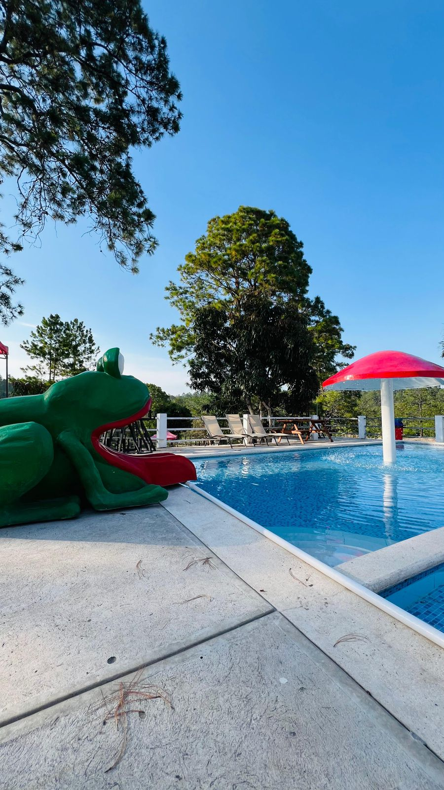
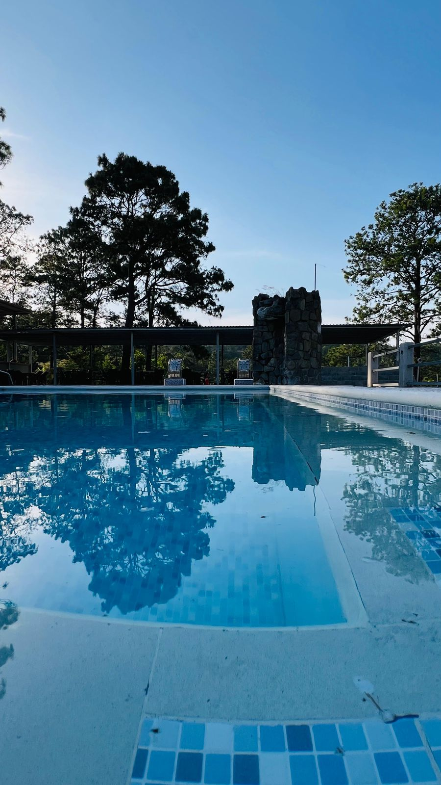
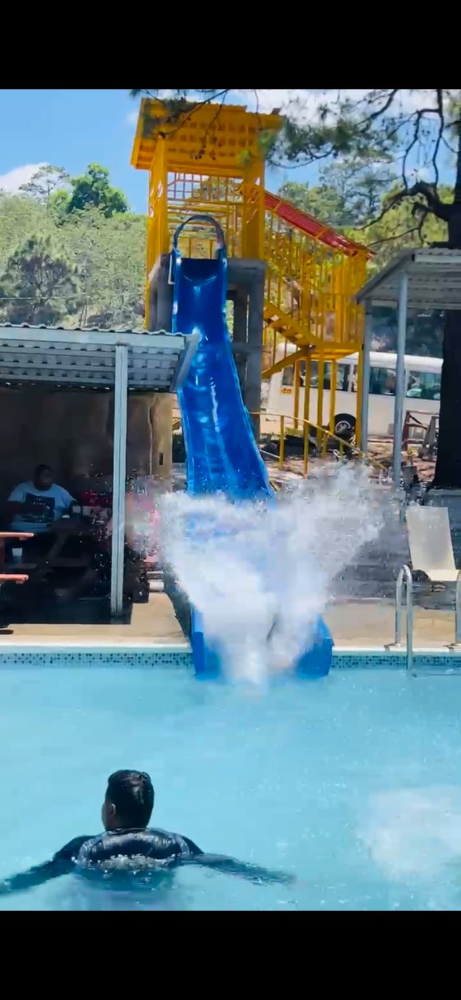
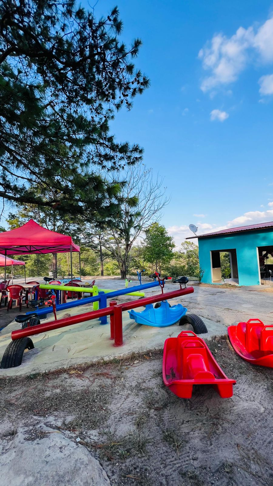

l Parque Aventuras
Pagina Principal
Menu de acceso para los temas princiales
Historia del Parque
Menu de nuestras Comidas
Pagina Principal
Menu de acceso para los temas princiales
Historia del parque
El Parque Aventuras se encuentra en la zona de Zambrano, Francisco Morazán, aproximadamente en el kilómetro 35 de la carretera CA-5. Es un espacio destinado al entretenimiento y la recreación, que aprovecha el entorno natural de la zona para ofrecer actividades familiares y espacios de convivencia.
Con el paso del tiempo, el lugar se ha convertido en un punto de recreación para personas que viajan por la carretera hacia el norte del país y para familias de las comunidades cercanas. Actualmente cuenta con diferentes espacios de entretenimiento y recreación, incluyendo áreas infantiles, piscina y miradores
 Menu de nuestras Comidas
Atracciones
Nuestro parque ofrece
Picsinas
Menu de nuestras Comidas
Atracciones
Nuestro parque ofrece
Picsinas


Toboganes

Juegos recreativos

Horarios y ubicacion
El parque ofrece un horario de:
Lunes a Domingo de 8:00 AM a 5:00 PM
 Ubicacion del parque
Esta ubicado en la carretera CA-5 KM.30 a la altura de Zambrano
Ubicacion del parque
Esta ubicado en la carretera CA-5 KM.30 a la altura de Zambrano
 Redes Sociales
Redes Sociales